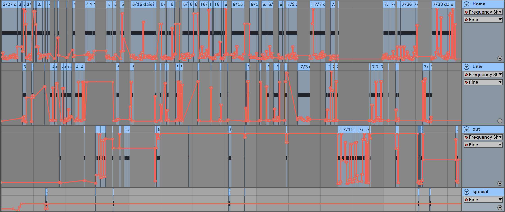
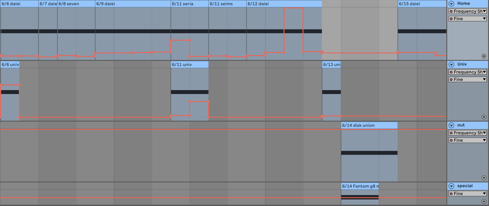

account music
慶應義塾大学SFCの授業「コンピュータミュージック1」の最終課題。
レシートの情報を音に置き換える事で自らの生活の可聴化を行う音の家計簿として作品を制作した。

生活の基盤となる家庭的な買い物(Home)、大学生活(Univ)、友人との外食などの生活の些細な幸福を作る買い物(out)、生活に大きく影響を与える買い物(special)、自身の生活を4種に分類し、それぞれに対応するトラックを制作した。

オーディオエフェクト[Frequency Shifter]の[Fine]にオートメーション書いて、ある買い物の中で購入した商品の値段を音の周波数に対応させていった。
各音の配置は、日付に対応させている。ここでは、買い物の時間は関係なく、異なる購入シーンで同じ日にちの買い物についての音を同タイミングでスタートさせている。音作りには TyrellN6 を使用している。
を使用している。
技術
AbletonLive
©
2020 Keisuke Okazaki